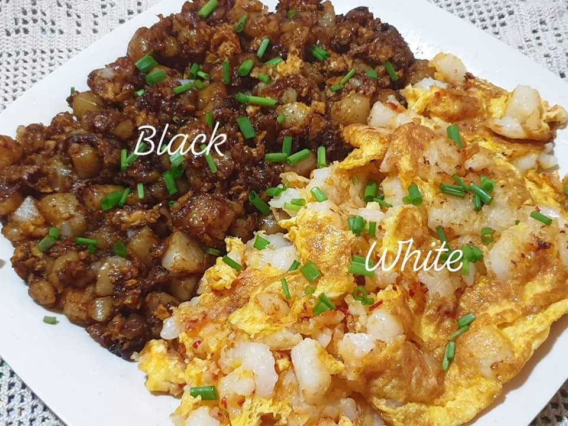

Fried Carrot Cake

Description
Do not confuse this with the dessert carrot cake, a moist cake made with carrot and spices; covered with cream cheese frosting. This savoury carrot cake has no carrot, at least not of the orange variety. Instead, the core ingredients of the cake are rice flour and white radish, which some call white carrot. The mixture is steamed, then cut into cubes and fried with garlic, eggs and preserved radish called 'chai poh'.
Commonly referred to as 'chai tow kway' in the Teochew dialect, these smooth and soft fried rice cakes can be found in almost every hawker centre. It is served black (fried with sweet dark soya sauce) or white (original).
Ingredients
serves 2 people
- 1 cup salted preserved radish (chye poh)
- 2 cloves garlic (chopped)
- 4 + 4 tbsp oil
- sugar (to taste)
- 3 cups steamed carrot cake (cut into cubes)
- 1 tsp fish sauce
- 4 eggs (beaten)
- 2 tbsp sweet black sauce
- pepper to taste
- 2 tbsp chopped spring onions
Steps
A. Prepare and fry the chye poh
- Rinse and pat dry the preserved radish to remove excess salt.
- Heat a pan with 4 tbsp oil. Fry the garlic and add in the preserved radish. Fry until the radishturns brown. You may add some sugar if you prefer your chye poh to be sweeter. Set aside.
B. Fry the white carrot cake
- Heat up a pan with oil.
- Add the cubes of carrot cake. Press the carrot cake down onto the pan so that it breaks further to smaller irregular pieces. Fry until carrot cake starts forming a light, golden crust on the outside.
- Add fish sauce and continue to fry.
- Add 2 tbsp of the fried preserved radish and continue to fry till a nice crust is formed.
- Add beaten eggs and fry till brown.
- Remove half the portion and serve with chopped spring onions.
-
C. Fry the black carrot cake
- With the remaining portion in the frying pan, reduce the heat.
- Add 1 tbsp of sweet black sauce. Toss until evenly coated. Turn off fire once evenly coated.